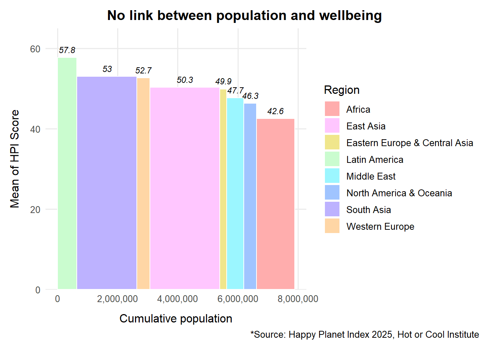
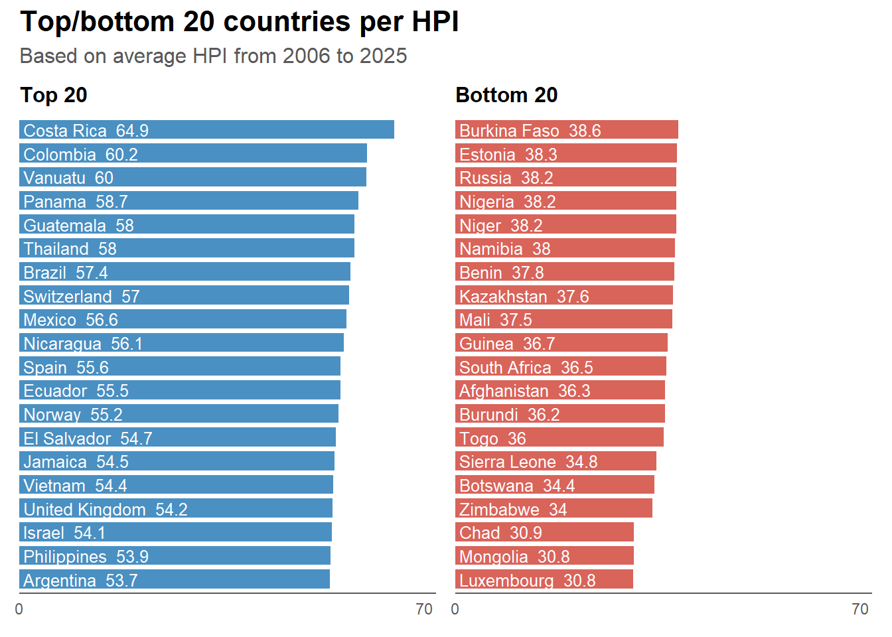
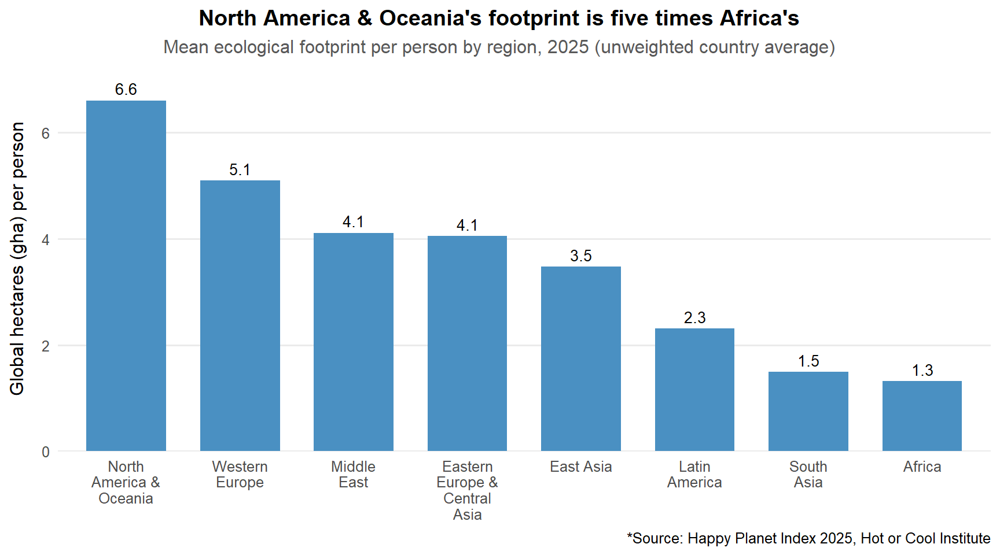

rm(list = ls())Assignment 4. Hackathon (Team Project)
Setting
Libraries
library(readxl)
# Graph 1
library(dplyr)
library(ggplot2)
# Graph 2
library(gt)
library(gtExtras)
library(tidyverse)
library(glue)
# Graph 3
library(tidyverse)
library(patchwork) File
hpi_raw <- read_excel("Happy-Planet-Index-2006-2025-public-data-set.xlsx",
sheet = "All Data", skip = 1)Data Check
hpi <- hpi_raw[, !names(hpi_raw) %in% c("...15", "...21", "...22", "...23")]
hpi_year <- hpi[hpi$Year == 2025, ]
# Note from data file
continent_map <- c(
"1" = "Latin America",
"2" = "North America & Oceania",
"3" = "Western Europe",
"4" = "Middle East",
"5" = "Africa",
"6" = "South Asia",
"7" = "Eastern Europe & Central Asia",
"8" = "East Asia"
)
hpi_year$Continent_name <- factor(continent_map[as.character(hpi_year$Continent)])Solbee Kim
Chart 1. Variable-width column
Data setup
chart1_data <- hpi_year %>%
group_by(Continent_name) %>%
summarise(
total_pop = sum(Population, na.rm = TRUE),
mean_hpi = mean(HPI, na.rm = TRUE)
) %>%
arrange(desc(mean_hpi)) %>%
mutate(
xmax = cumsum(total_pop),
xmin = xmax - total_pop,
xmid = (xmin + xmax) / 2
)Plotting
rainbow <- c("#FFADAD", "#FFC6FF", "#F0E68C", "#CAFCCF",
"#9BF6FF", "#A0C4FF", "#BDB2FF", "#FFD6A5")
ggplot(chart1_data) +
geom_rect(aes(xmin = xmin, xmax = xmax, ymin = 0, ymax = mean_hpi,
fill = Continent_name),
color = "white", linewidth = 0.5) +
geom_text(aes(x = xmid, y = mean_hpi + 2, label = round(mean_hpi, 1)),
size = 3.0, fontface = "italic") +
scale_fill_manual(values = rainbow, name = "Region") +
scale_x_continuous(labels = scales::comma) +
scale_y_continuous(limits = c(0, 65), expand = c(0, 0)) +
labs(
title = "No link between population and wellbeing",
x = "Cumulative population",
y = "Mean of HPI Score",
caption = "*Source: Happy Planet Index 2025, Hot or Cool Institute"
) +
theme_minimal(base_size = 12) +
theme(legend.position = "right",
panel.grid.minor = element_blank(),
plot.margin = margin(t = 10, r = 10, b = 10, l = 10),
plot.title = element_text(hjust = 0.5, face = "bold"),
plot.caption = element_text(hjust = 1),
plot.title.position = "plot",
plot.caption.position = "plot",
axis.title.x = element_text(margin = margin(t = 10)),
axis.title.y = element_text(margin = margin(r = 10)))
Chart 2. Table with Embedded Charts
Data setup
chart2_data <- hpi_year %>%
group_by(Continent_name) %>%
slice_max(order_by = HPI, n = 5) %>%
ungroup() %>%
arrange(Continent_name, desc(HPI)) %>%
select(Continent_name, Country, HPI, `Life Expectancy`, `Ecological Footprint`)Plotting
# Rounded to two decimal places
make_bar <- function(value, max_value, color) {
width_pct <- round(100 * value / max_value, 1)
value_rounded <- round(value, 2)
glue(
'<div style="display:flex; align-items:center; gap:6px;">
<div style="background:{color}; width:{width_pct}px; height:14px;"></div>
<span>{value_rounded}</span>
</div>'
)
}
chart2_data <- chart2_data %>%
mutate(
HPI_bar = map_chr(HPI, ~make_bar(.x, max(HPI, na.rm = TRUE), "#FFD6A5")),
LifeExp_bar = map_chr(`Life Expectancy`, ~make_bar(.x, max(`Life Expectancy`, na.rm = TRUE), "#A0C4FF"))
)
# Graph
chart2_data %>%
select(Continent_name, Country, HPI_bar, LifeExp_bar, `Ecological Footprint`) %>%
gt(groupname_col = "Continent_name") %>%
fmt_markdown(columns = c(HPI_bar, LifeExp_bar)) %>%
fmt_number(columns = `Ecological Footprint`, decimals = 2) %>%
tab_header(
title = "Top 5 countries by HPI score, within each region, 2025"
) %>%
tab_source_note("*Source: Happy Planet Index 2025, Hot or Cool Institute") %>%
cols_label(
Country = "Country",
HPI_bar = "HPI Score",
LifeExp_bar = "Life Expectancy (yrs)",
`Ecological Footprint` = "Ecological Footprint (gha)"
) %>%
tab_style(
style = cell_text(weight = "bold", align = "center"),
locations = cells_title()
) %>%
tab_style(
style = cell_text(style = "italic"),
locations = cells_source_notes()
) %>%
tab_style(
style = cell_text(weight = "bold"),
locations = cells_row_groups()
)| Top 5 countries by HPI score, within each region, 2025 | |||
| Country | HPI Score | Life Expectancy (yrs) | Ecological Footprint (gha) |
|---|---|---|---|
| Africa | |||
| Mozambique | 51.13 |
63.97 |
0.59 |
| Cameroon | 49.34 |
64.25 |
1.03 |
| Uganda | 48.2 |
68.71 |
1.06 |
| Mauritius | 47.31 |
75.27 |
3.96 |
| Kenya | 47.17 |
64.01 |
0.99 |
| East Asia | |||
| Philippines | 59.31 |
70.07 |
1.37 |
| Laos | 58.84 |
69.47 |
0.94 |
| Vietnam | 58.06 |
74.88 |
2.30 |
| Thailand | 57.08 |
76.83 |
2.46 |
| Japan | 54.6 |
85 |
3.94 |
| Eastern Europe & Central Asia | |||
| Tajikistan | 60.67 |
72.05 |
1.03 |
| Albania | 58.32 |
79.95 |
2.40 |
| Romania | 55.64 |
76.25 |
3.05 |
| Uzbekistan | 54.9 |
72.66 |
2.30 |
| Bosnia and Herzegovina | 54.18 |
78.24 |
3.88 |
| Latin America | |||
| Costa Rica | 68.32 |
81.19 |
2.62 |
| Guatemala | 60.71 |
72.89 |
1.79 |
| Colombia | 60.57 |
78.09 |
1.85 |
| Ecuador | 60.33 |
77.76 |
2.26 |
| Nicaragua | 59.59 |
75.27 |
1.80 |
| Middle East | |||
| Jordan | 55.88 |
78.13 |
1.38 |
| Tunisia | 54.26 |
76.9 |
1.63 |
| Iraq | 52.8 |
72.53 |
2.02 |
| Algeria | 52.8 |
76.69 |
2.73 |
| Morocco | 49.68 |
75.68 |
1.87 |
| North America & Oceania | |||
| New Zealand | 53.25 |
82.39 |
5.00 |
| Canada | 45.49 |
82.88 |
6.62 |
| Australia | 43.33 |
84.21 |
7.75 |
| United States of America | 43.23 |
79.61 |
7.05 |
| South Asia | |||
| Bangladesh | 56.34 |
75.19 |
0.91 |
| Nepal | 53.99 |
70.9 |
0.89 |
| Pakistan | 53.13 |
67.94 |
0.72 |
| Sri Lanka | 52.07 |
77.85 |
1.27 |
| India | 49.58 |
72.48 |
1.13 |
| Western Europe | |||
| Spain | 60.6 |
83.96 |
3.18 |
| Switzerland | 60.36 |
84.23 |
3.87 |
| Germany | 58.08 |
81.71 |
3.78 |
| United Kingdom | 57.8 |
81.6 |
3.41 |
| Norway | 57.61 |
83.61 |
4.41 |
| *Source: Happy Planet Index 2025, Hot or Cool Institute | |||
John Vasconcelos
Chart 3. Bar Chart
To use a bar chart, we needed to calculate the average HPI per country across all years with available data. The number of years with available data, however, varies among countries. For better reliability, we removed from the dataset countries with less than 10 years of reported HPI.
Data setup
chart3_data <- hpi |>
dplyr::filter(!is.na(HPI)) |>
mutate(HPI = as.numeric(HPI)) |>
group_by(Country) |>
summarise(Avg_HPI = mean(HPI),
Count = length(HPI)) |>
dplyr::filter(Count>=10)Plotting
# Visual settings
base_font <- "sans"
base_size <- 11
color_top <- "#4A90C2" # blueish (positive)
color_bot <- "#D9645A" # reddish (negative)
label_color <- "white"
# Data
top20 <- chart3_data |> slice_max(Avg_HPI, n = 20)
bot20 <- chart3_data |> slice_min(Avg_HPI, n = 20)
# Same x scale for both charts, rounded up to the next multiple of 10
x_max <- ceiling(max(c(top20$Avg_HPI, bot20$Avg_HPI), na.rm = TRUE) / 10) * 10
# Function that builds one chart
hpi_bar_chart <- function(data, fill_color, panel_title) {
data |>
mutate(
label = paste0(Country, " ", round(Avg_HPI, 1)),
Country = fct_reorder(Country, Avg_HPI)
) |>
ggplot(aes(x = Avg_HPI, y = Country)) +
geom_col(fill = fill_color, width = 0.8) +
geom_text(
aes(x = 0, label = label),
hjust = 0, nudge_x = x_max * 0.01, # close to the y axis, inside the bar
vjust = 0.5, # vertical middle of the bar
color = label_color, size = base_size / 3.2, family = base_font
) +
scale_x_continuous(
limits = c(0, x_max), # identical scale on both charts
breaks = c(0, x_max), # only zero and the top of the scale
expand = expansion(mult = c(0, 0.03))
) +
labs(title = panel_title, x = NULL, y = NULL) +
theme_minimal(base_size = base_size, base_family = base_font) +
theme(
axis.text.y = element_blank(), # names are in the bar labels
axis.text.x = element_text(color = "grey35"),
axis.ticks = element_blank(), # no ticks
axis.line.x = element_line(color = "grey35", linewidth = 0.4), # keep the horizontal line
panel.grid = element_blank(),
plot.title = element_text(face = "bold", size = base_size + 1)
)
}
p_top <- hpi_bar_chart(top20, color_top, "Top 20")
p_bot <- hpi_bar_chart(bot20, color_bot, "Bottom 20")
# Combine with shared title and subtitle
(p_top | p_bot) +
plot_annotation(
title = "Top/bottom 20 countries per HPI",
subtitle = "Based on average HPI from 2006 to 2025",
theme = theme(
plot.title = element_text(face = "bold", size = base_size + 5, family = base_font),
plot.subtitle = element_text(size = base_size + 1, color = "grey35", family = base_font)
)
)
Evandro Gomes
Chart 4. Column chart
Data setup
chart4_data <- hpi_year %>%
dplyr::filter(!is.na(Continent_name)) %>%
mutate(footprint = as.numeric(`Ecological Footprint`)) %>%
group_by(Continent_name) %>%
summarise(
mean_footprint = mean(footprint, na.rm = TRUE),
n_countries = sum(!is.na(footprint))
) %>%
mutate(Continent_name = reorder(Continent_name, -mean_footprint))
chart4_data# A tibble: 8 × 3
Continent_name mean_footprint n_countries
<fct> <dbl> <int>
1 Africa 1.32 40
2 East Asia 3.47 13
3 Eastern Europe & Central Asia 4.05 25
4 Latin America 2.31 21
5 Middle East 4.11 17
6 North America & Oceania 6.60 4
7 South Asia 1.49 7
8 Western Europe 5.10 20Plotting data
ggplot(chart4_data, aes(x = Continent_name, y = mean_footprint)) +
geom_col(fill = "#4A90C2", width = 0.7) +
geom_text(aes(label = sprintf("%.1f", mean_footprint)),
vjust = -0.5, size = 3.5) +
scale_x_discrete(labels = scales::label_wrap(10)) +
scale_y_continuous(expand = expansion(mult = c(0, 0.1))) +
labs(
title = "North America & Oceania's footprint is five times Africa's",
subtitle = "Mean ecological footprint per person by region, 2025 (unweighted country average)",
x = NULL,
y = "Global hectares (gha) per person",
caption = "*Source: Happy Planet Index 2025, Hot or Cool Institute"
) +
theme_minimal(base_size = 12) +
theme(
panel.grid.major.x = element_blank(),
panel.grid.minor = element_blank(),
plot.title = element_text(hjust = 0.5, face = "bold"),
plot.subtitle = element_text(hjust = 0.5, color = "grey35"),
plot.caption = element_text(hjust = 1),
plot.title.position = "plot",
plot.caption.position = "plot",
axis.title.y = element_text(margin = margin(r = 10))
)
Session Info
sessionInfo()R version 4.5.1 (2025-06-13 ucrt)
Platform: x86_64-w64-mingw32/x64
Running under: Windows 11 x64 (build 22000)
Matrix products: default
LAPACK version 3.12.1
locale:
[1] LC_COLLATE=Portuguese_Brazil.utf8 LC_CTYPE=Portuguese_Brazil.utf8
[3] LC_MONETARY=Portuguese_Brazil.utf8 LC_NUMERIC=C
[5] LC_TIME=Portuguese_Brazil.utf8
time zone: America/Chicago
tzcode source: internal
attached base packages:
[1] stats graphics grDevices utils datasets methods base
other attached packages:
[1] patchwork_1.3.2 glue_1.8.0 lubridate_1.9.4 forcats_1.0.1
[5] stringr_1.5.2 purrr_1.1.0 readr_2.1.5 tidyr_1.3.1
[9] tibble_3.3.0 tidyverse_2.0.0 gtExtras_0.6.2 gt_1.3.0
[13] ggplot2_4.0.0 dplyr_1.1.4 readxl_1.4.5
loaded via a namespace (and not attached):
[1] utf8_1.2.6 sass_0.4.10 generics_0.1.4 xml2_1.4.1
[5] stringi_1.8.7 hms_1.1.4 digest_0.6.38 magrittr_2.0.4
[9] evaluate_1.0.5 grid_4.5.1 timechange_0.4.0 RColorBrewer_1.1-3
[13] fastmap_1.2.0 cellranger_1.1.0 jsonlite_2.0.0 rematch2_2.1.2
[17] scales_1.4.0 cli_3.6.5 rlang_1.1.6 litedown_0.11
[21] commonmark_2.0.0 base64enc_0.1-3 withr_3.0.2 yaml_2.3.10
[25] otel_0.2.0 tools_4.5.1 tzdb_0.5.0 paletteer_1.7.0
[29] vctrs_0.6.5 R6_2.6.1 lifecycle_1.0.4 fs_1.6.6
[33] htmlwidgets_1.6.4 fontawesome_0.5.3 pkgconfig_2.0.3 pillar_1.11.1
[37] gtable_0.3.6 xfun_0.61 tidyselect_1.2.1 rstudioapi_0.17.1
[41] knitr_1.52 farver_2.1.2 htmltools_0.5.8.1 labeling_0.4.3
[45] rmarkdown_2.32 compiler_4.5.1 S7_0.2.0 markdown_2.0